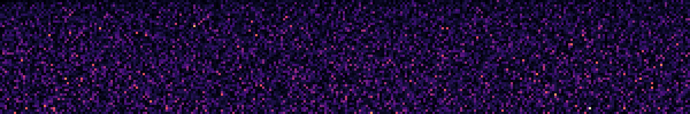

Plotting Prime Gaps.
Visualization of data has always been a passion of mine. A small script for visualizing gaps between prime numbers I would like to share here.
The smallest gap between primes is the gap between two and three, nowhere else are there two primes in direct consecutive order – logically. The gaps between the primes become infinitely large towards infinity – and this can be easily proven. And nevertheless the Twin Prime Conjecture says that there are infinitely many primes which have a distance of two. Prime numbers are simply fascinating.
The gaps between the primes follow a purely random scheme and still result in wonderful patterns.
At the beginning, width and height can be specified.
HEIGHT = 5 WIDTH = 7
The script then calculates the first width*height+1 primes. In the next step, the gaps between the primes are calculated and stored in a 2D array with the specified width and height. The array is then visualized as a heat map. The smallest and thus darkest gap between 2 and 3 is located at the top left.
If the parameters are inserted as in the box above. The result is as follows:
The darkest box at the top left is the gap between 2 and 3. Following are the dark gaps between 3 and 5 and between 5 and 7. The gap between 7 and 11 is the first slightly lighter gap. The brightest gap (below, the second from the left) is the gap with distance 14 between 113 and 127.
Bigger Plots
The plot has the dimensions 117 * 273 and thus shows the first 31,941 gaps between primes. Therefore, 31,942 primes were calculated, among which the largest is the number 375,391. The largest is at the bottom of the plot, approximately in the middle, and is the gap of 112 between the numbers 370,261 and 370,373.
2,560,000 Primes
The largest plot I created has dimensions 1600 by 1600 and contains 2,560,000 primes, the largest of which is 42,216,833. The largest gap is 210.

Take a look at the code in this short jupyter notebook.